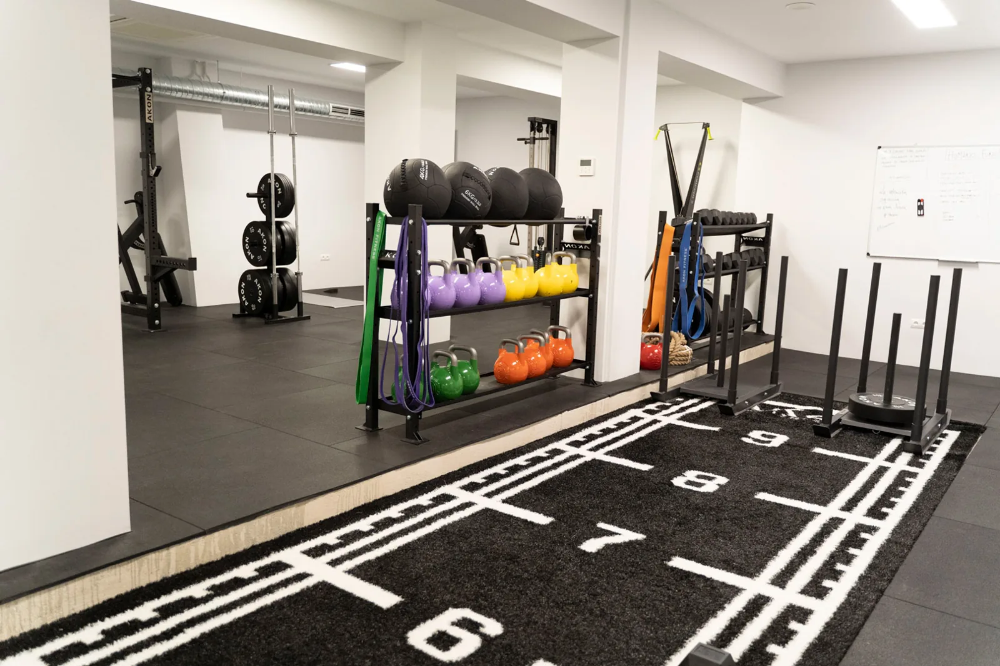
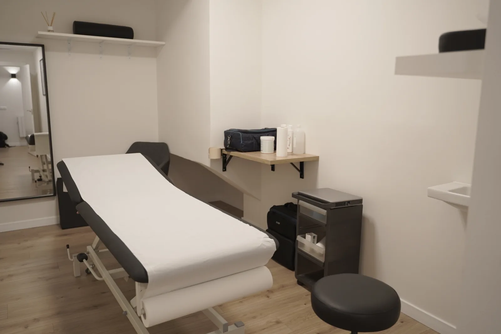
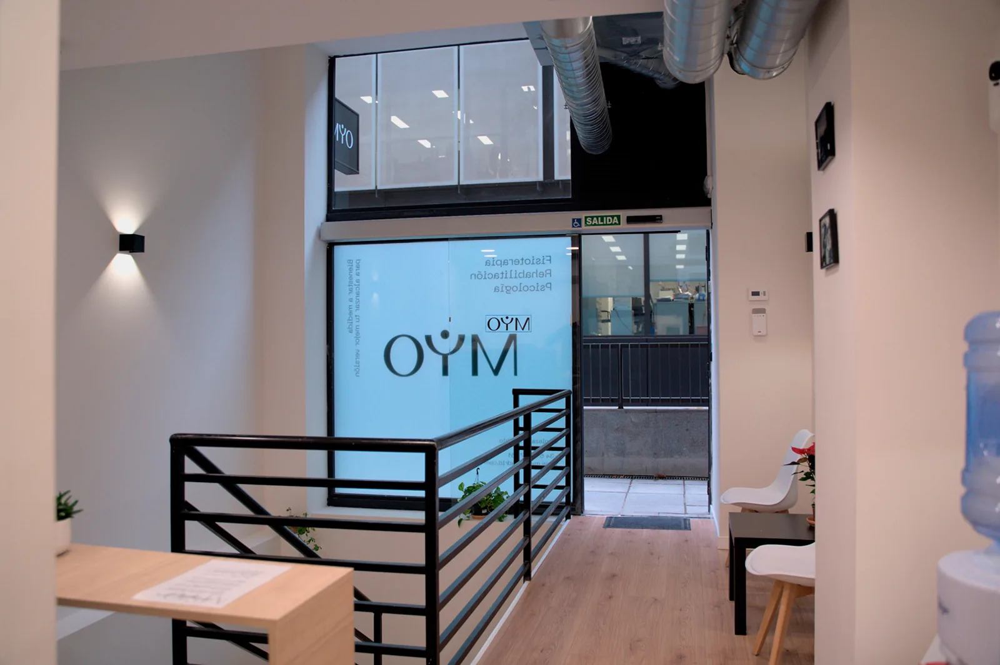
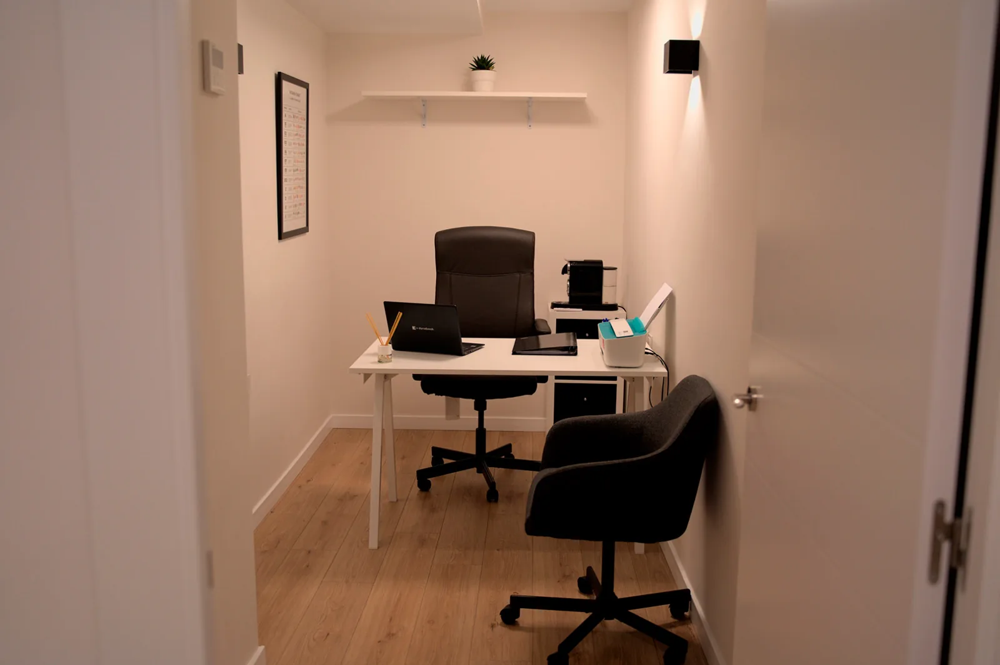

Fisioterapia
Comprender cómo te mueves y acompañar tu recuperación, con una valoración individual como punto de partida.
Conoce la primera visitaMYO Madrid · Chamartín
Tu salud no va por partes. Fisioterapia, entrenamiento, nutrición y psicología en un mismo espacio.
Cuidarte. Moverte. Volver a ti.

01 / Disciplinas
No necesitas tener todas las respuestas.
Empieza por lo que te gustaría trabajar.
Comprender cómo te mueves y acompañar tu recuperación, con una valoración individual como punto de partida.
Conoce la primera visitaTrabaja fuerza, movilidad y condición física. Un proceso que parte de tus objetivos y de tu momento.
Cómo pedir citaEncuentra espacio para revisar tus hábitos y tu alimentación, sin perder de vista tu día a día.
Cómo pedir citaCuidarte también es escucharte. Un espacio de atención psicológica para trabajar en tu bienestar emocional.
Cómo pedir cita
Más cerca / Fisioterapia
Si una molestia limita tu actividad o quieres retomar el movimiento, una valoración profesional puede ayudarte a definir por dónde empezar.
Tu contexto, tus objetivos y lo que importa en tu día a día.
Explorar el movimiento y acordar un plan según la valoración.
Revisar la evolución y adaptar los siguientes pasos.
Consulta tarifas y duración con el centro.
Ver citas en bsport02 / El centro
Movimiento y atención individual en un mismo lugar. Fotografías reales de las instalaciones de MYO.


03 / Tu siguiente paso
Una consulta, tu próxima clase o un plan a tu medida. Cada paso, por el canal que necesitas.
¿Vienes con tu plataforma?Fisioterapia, entrenamiento personal, nutrición o psicología. Consulta los servicios y horarios en bsport.
Ver citas en bsportConsulta el calendario del centro y gestiona tu reserva desde bsport, también si ya eres socio.
Ver clases en bsportConsulta con el equipo los bonos, packs y cuotas que se ajustan a tus objetivos y a tu ritmo.
Consultar bonos y packsCuéntanos qué necesitas. El equipo de MYO te orientará para encontrar tu punto de partida.
Contactar con el centroLa reserva continúa en bsport. Para orientación y planes, te llevamos al formulario de contacto del centro.
Con tu plataforma
Si vienes con Wellhub, Urban Sports Club o ClassPass, consulta el acceso de tu plan y reserva en tu plataforma.
Antes Gympass. Comprueba las actividades incluidas en tu plan y encuentra MYO Madrid en Wellhub.
Ver MYO en WellhubConsulta las clases de MYO y reserva desde la app de Urban Sports Club.
Ver MYO en USCEncuentra el centro y consulta las clases disponibles para tu cuenta de ClassPass.
Ver MYO en ClassPassLas actividades, visitas y condiciones dependen de tu plataforma y membresía. Comprueba la cobertura antes de reservar.
Antes de empezar
Pulsa «Pedir cita» y elige entre una consulta individual, una clase o atención del centro. Las reservas se gestionan en bsport; si vienes con Wellhub, Urban Sports Club o ClassPass, utiliza tu plataforma.
Contacta con el equipo de MYO para consultar cuál se ajusta a lo que necesitas. Enviar la solicitud no confirma una reserva: acuerda la disponibilidad y los detalles de tu visita con el centro.
Consulta los horarios en bsport. Para bonos, packs, cuotas o dudas sobre tarifas y duración, habla con el centro antes de confirmar.
No necesariamente. Las actividades incluidas y los límites de visitas dependen de tu plataforma y plan. Comprueba sus condiciones y no des por cubierta una consulta individual por tener acceso a clases.
Estamos para escucharte
¿Prefieres hablar con el equipo? Cuéntanos qué necesitas y te orientamos.
Contactar con MYOTe llevamos al formulario de contacto de MYO.